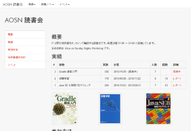
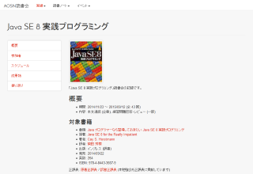
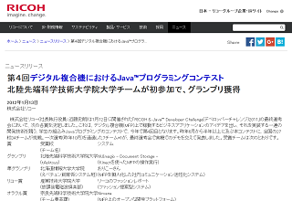
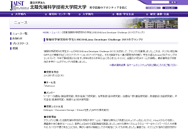
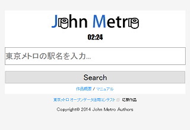
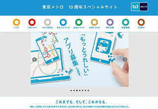

岡本拓海のエンジニアポートフォリオ
Skils
Private work
AOSN Workshop
情報科学やプログラミングに関しての本の読書会をしています。 
RICOH & Java Developer Challenge 2011 link
メンバー: Y.Kato, A.Sako, Y.Sato, T.Takao, K.Tomura and T.Yanagisawa グランプリ(最優秀賞)受賞.  
Tokyo Metro Open Data Contest
Member: Y.Kato and T.Namikawa) 作品"John Metro"は左のリンクで稼働中です http://apps.tasktoys.com/johnmetro  
GUGEN2014
Academic works
Younes El Hamdi , Takumi Okamoto, Nak Young Chong, Il Hong Suh,"Developing a Bayesian Framework for Human Behavior Tracking ",The 26th Annual Conference of the Japanese Society for Artificial Intelligence, 2012
Academic career
2007 名城大学 理工学部機械システム工学科卒業 2013 北陸先端科学技術大学院大学 情報科学研究科 修了